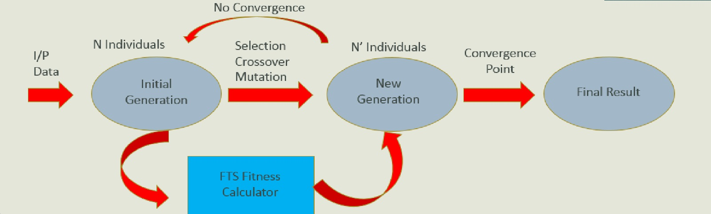

Project Modules
There are three major modules data ingestion,prediction, data visualization and the integration
module. Data ingestion will allow a configurable way to parse the input data. On existence of
necessarily columns for the prediction, the module will execute. Initially, data will be read from
MSExcel format.Prediction module will include implementation of FTS and GA algorithms in the MapReduce
paradigm.Data visualization module will use the prediction results in various output formats to
easily understand and visualize the results.
Hybrid GA+FTS Model

GA+FTS model can be visualized as combination of two functionalities where GA is used
to improve correctness of each corresponding generation over previous ones while FTS is
used fitness calculator to check the mean square error (MSE).
Algorithm
Step 1: Read the training data which in this case will be time based events.
Step 2: Find the maximum and the minimum values of the input data and select thresholds
are greater than the min, max value but are whole numbers.
Step 3: Create the first generation of Genetic Algorithm which will be a set of individuals.
Each of the individuals will be a set of buckets which will lie in the range of the thresholds.
Step 4: Create the division of the generation data which can be used in the MapReduce model.
Step 5: The mapper task will apply Fuzzy Time Series Algorithm using the training data
and the randomized individual. This will make prediction for each individual and fitness value
for each of them will be calculated.
Step 6: The reducer task will perform the selection, cross-over and mutation operations
of GA based on the fitness value calculated by the mapper task. Thus, a new generation of
individuals will be created.
Step 7: Repeat Steps 4 through 6 until the convergence point is reached.